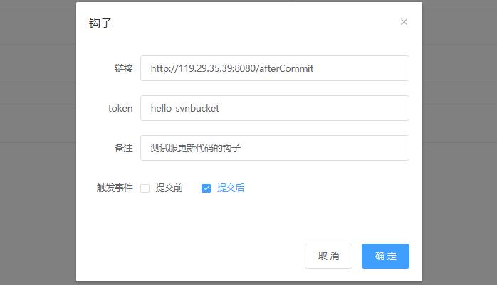
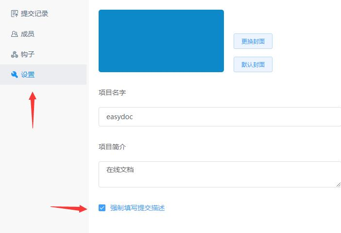

钩子其实和回调是一个概念，当某个事情发生时就会调用你提供的方法，利用好SVN钩子可以大大的方便你的开发。
web 开发人员，每次提交了代码都需要手动到服务器更新下代码才能看到效果。
今天我就教大家如何利用钩子自动化更新。
下面我们将讲解在SVNBucket中如何配置钩子，如果你还没有SVNBucket帐号，点击注册

在SVNBucket的项目详情页，我们打开钩子配置页面，如上图，点击添加钩子，我们需要填入 链接、token、触发条件
链接：就好比我们的回调方法，在你提交代码后就会自动调用这个链接，你收到调用后就可以执行代码更新了。
token：是一个可选的参数，在调用链接时会带上这个参数，可以用来检查调用是否来自 SVNBucket。这里可以随意填写一个自己想要的参数就行了
触发条件：触发条件我们选择提交后，这样代码提交之后就会调用链接。
备注：可以填写一个方便你记忆的名字，例如：更新测试服代码的钩子
那么我们的链接填写什么呢？你需要自己写一个http服务，用来接收调用。
编写更新脚本
下面我以Python代码为例（PHP版本看文章最后），写一个简单的 http 服务来接收调用
1
2
3
4
5
6
7
8
9
10
11
12
13
14
15
16
17
18
19
20
21
22
23
24
25
26
27
28
29
30
31
32
33
34
35
36
37
38
39
40
41
42
43
44
45
46
47
48
49
50
51
52
53
54
55
56
57
58
59
60
61
62
63
64
65
66
|
import os
from flask import Flask, request
app = Flask(__name__)
@app.route('/onCommit', methods=['POST'])
def onCommit():
param = request.form
keys = param.keys()
for key in keys:
print('%s=%s' % (key, param.get(key, '')))
if param.get('token', '') != 'YourToken':
print('token校验不对，忽略')
return 'invalid request'
if param.get('event') == 'post-commit':
output = os.popen('./up_and_restart.sh')
print(output.read())
return 'ok'
elif param.get('event') == 'start-commit':
return 'ok'
elif param.get('event') == 'test':
return 'test ok'
if __name__ == '__main__':
app.run(host='0.0.0.0', port=8080)
|
这里我们用 Python 的 flask 框架搭建了一个简单的 http 服务来处理代码更新。根据这个可以自己实现一个其他语言的版本
在收到请求后我们就执行了一个shell脚本，这个shell脚本就是调用svn update去更新我们的代码了。
up_and_restart.sh脚本内容类似以下内容（根据你的业务需求写）
1
2
| svn update /path/to/your/code/dir
service restart xxxx
|
假设你的服务器IP是119.29.35.39，http 服务的端口是8080，接口为 /afterCommit，那么我们就应该配置上面的链接地址为：
配置好了后，我们可以点击测试按钮进行测试，这样就会手动的触发一次链接请求，并且在下面区域显示调用记录、是否成功

上面讲解的是提交后钩子的经典应用（更新代码）
提交前钩子最经典的应用是判断是否有填写描述内容，我们可以限制不填写提交描述就不给提交，SVNBucket 已经为你做好了这个功能，只需要在设置页面开启下就可以了。

最后再提供一个PHP版本的供参考：
1
2
3
4
5
6
7
8
9
10
11
12
13
14
15
16
17
18
19
20
21
22
23
24
25
26
27
28
29
30
31
32
33
34
35
36
37
38
39
40
41
42
43
44
| <?php
header("Content-Type: text/html; charset=utf-8");
header("Cache-Control:no-cache,must-revalidate");
if($_POST['token'] === '你填写的Token值')
{
$username = '你的SVN用户名';
$password = '你的SVN密码';
$target_dir = '/data/www';
exec("svn up --username $username --password $password --no-auth-cache $target_dir 2>&1", $output, $outresult);
print_r("\noutput:$output, result:$outresult");
if ($outresult ===0 )
{
echo '更新成功！';
return 'ok';
}
else
{
echo '更新失败！';
echo print_r($output);
return 'failed';
}
}
else
{
echo '数据校验失败，无效更新！';
return 'failed';
}
|